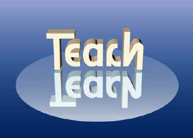

Professional development: Getting over the hump!
David Bar-Tzur
Created 8/15/2001, links updated monthly with the help of LinkAlarm.
 Audiotapes
CDs, DVDs, and videotapes
Deaf events
Do-it-yourself
Education
Mailing lists, user groups & chat rooms
Mentoring
Online teaching and learning
Organizations
Outside assessment and certification
People
Periodicals and articles
Web sites
Workshops and conferences
Audiotapes
CDs, DVDs, and videotapes
Deaf events
Do-it-yourself
Education
Mailing lists, user groups & chat rooms
Mentoring
Online teaching and learning
Organizations
Outside assessment and certification
People
Periodicals and articles
Web sites
Workshops and conferences

There's a reason why you can get CEU's (Continuing Education Units) from RID for teaching a class. It's because in teaching you yourself learn. It channels your thinking when you try to express ideas you believe you already have clear in your head. The questions that your students will ask will also make you think about matters that have lain dormant or undeveloped in your mind. Below are some workshops that I have taught in the past (and am available to teach in the future, wink, wink). You are welcome to use them to teach your own workshops as long as you leave my name on the materials. It goes without saying, developing your own will also be beneficial for you.
Information on teaching classes
Bar-Tzur, D.
Eighinger, L. Keeping PACE: Performance Assessment for Career Enhancement. A general article on the proper design of in-service trainings.
Information on teaching workshops
Simon, J. H. (2003). Manual: How to coordinate and host a successful workshop OR How not to get lost in the details. This is a downloadable .pdf file.
Master's Degree in Interpreting Pedagogy
Master's in Interpreting Pedagogy.